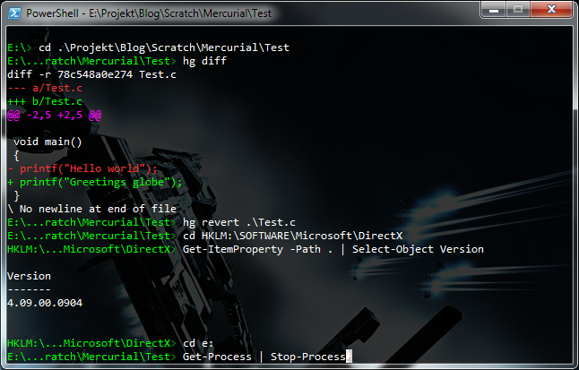

PowerShell to the people
Windows PowerShell was created by Microsoft to be used for administration of Windows, Exchange, SQL Server and so on. But it is also a replacement for the old Command Prompt. With it the Windows command line goes from something vastly inferior to *nix shells to something that in many ways surpasses it. So, if you haven’t already, set aside four hours and learn the basics.
PowerShell is built on and tightly integrated with .NET. Functionality in PowerShell is generally provided by special .NET classes called cmdlets (a Microsoft madeuppy word). You also have access to .NET’s whole base class library. Although the syntax is a bit different than you may be used to.
[String]::Format("{0:#.##}", [Math]::PI * 2)
(Get-Date).ToString("dddd", [Globalization.CultureInfo]::InvariantCulture)
$web = New-Object System.Net.WebClient
$web.DownloadString("http://blog.gieron.info/Blog.sln")Customize your shell
The default console window for PowerShell is the same as for cmd.exe. It’s not very impressive. You can change the window size and the colors but that’s about it. There is however a third party alternative called Console which has some nice features such as transparency and tabs.
PowerShell executes a script file when it starts where you can put anything you want to run whenever you open a new shell. The path to this file is contained in the variable $profile. Here is mine:
$host.UI.RawUI.ForegroundColor = "White"
function Prompt
{
$path = $pwd -Replace "^Microsoft\.PowerShell\.Core\\FileSystem\:\:", ""
$shortpath = $path
$shortpath = $shortpath -Replace "^(.:\\)....+(.{20})$", "`$1...`$2"
$shortpath = $shortpath -Replace "^(....:\\)....+(.{17})$", "`$1...`$2"
$shortpath = $shortpath -Replace "^....+(.{23})$", "...`$1"
Write-Host -ForegroundColor Green -NoNewLine $shortpath
Write-Host -ForegroundColor DarkGreen -NoNewLine '>'
$host.UI.RawUI.WindowTitle = $path
return " "
}